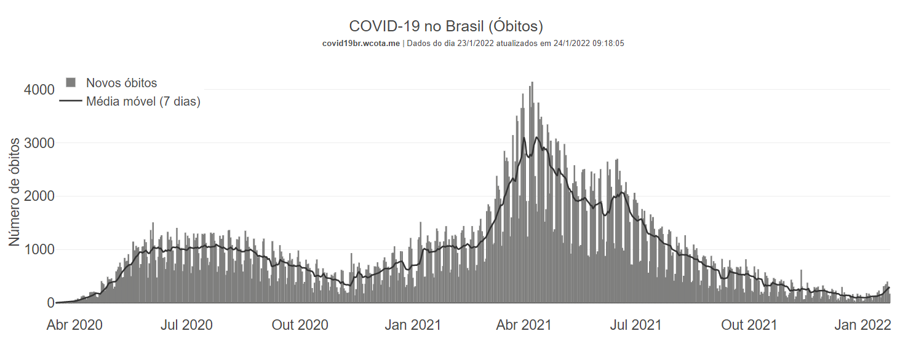

Atualidades sobre o Corona Vírus
Os casos de Covid-19 atualmente
Atualmente, os casos de Covid-19 cairam, e consequentemente, as taxas de mortes também diminuíram. Isso vem ocorrendo graças a vacinação em massa que ocorreu, em 2021.
No Brasil, até hoje (26 de março de 2022) foram aplicadas 411 milhões de doses, vacinando totalmente 160 milhões de pessoas, que é aproximadamente, 75,1% da população brasileira.
E as medidas de prevenção?
Mesmo com a vacinação que contemplou grande parte do povo brasileiro, as medidas restritivas permaneceram até fevereiro de 2022. Mas em março, algumas formas de prevenção não são mais obrigatórias. O uso de máscaras em lugares abertos e fechados agora não é mais obrigatório, por exemplo, mas se a pessoa quiser, poderá continuar usando para se sentir mais confortável.
Índice de óbitos entre abril de 2020 e janeiro de 2022:
